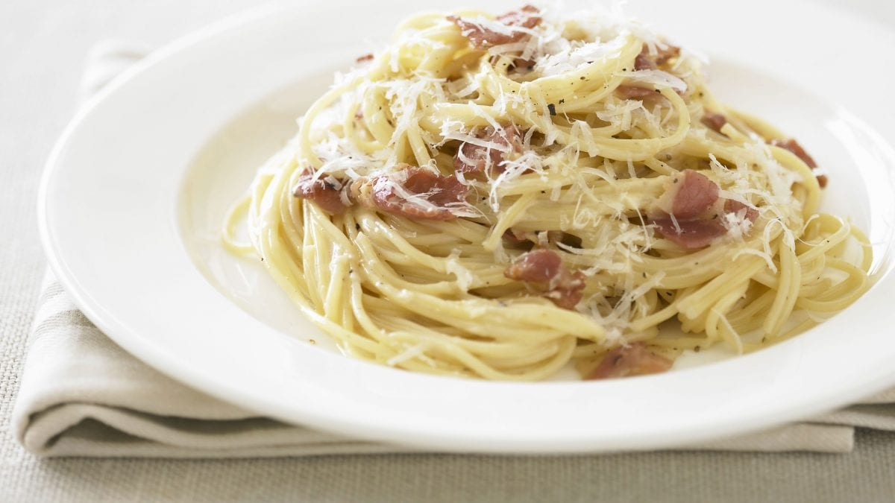
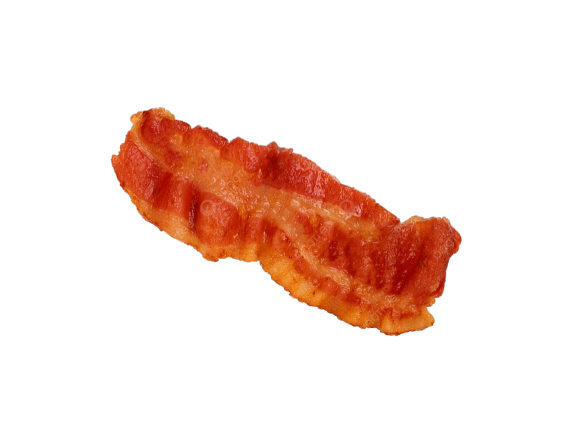
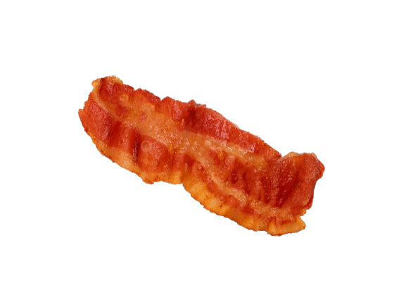

History of Carbonara
Carbonara is an Italian pasta dish from Rome made with egg, cheese, pancetta, and pepper. The recipe is not fixed by a specific type of cheese or pasta.
The dish arrived at its modern form, with its current name, in the middle of the 20th century.

Click on the image to learn more about the origins of Carbonara.
Carbonara Recipe
- 200g spaghetti
- 100g pancetta
- 2 large eggs
- 50g pecorino cheese
- 50g parmesan
- Freshly ground black pepper
- Salt
- 2 tbsp olive oil
For more detailed recipes, visit BBC Good Food.
Pairings for Carbonara
Drinks
- White Wine: A crisp white wine like Pinot Grigio or Sauvignon Blanc.
- Red Wine: A light red wine like Chianti or Pinot Noir.
- Sparkling Water: To cleanse the palate and complement the richness.
- Lemonade: For a refreshing and citrusy balance.
Sides
- Garlic Bread: Classic and flavorful, perfect for soaking up any leftover sauce.
- Caesar Salad: A crisp and tangy salad to balance the creamy pasta.
- Roasted Vegetables: Adds a healthy and savory element to the meal.
- Caprese Salad: Fresh tomatoes, mozzarella, and basil for a light and tasty side.
Discover more drink pairings here.
DIY Carbonara
Ingredients
 
